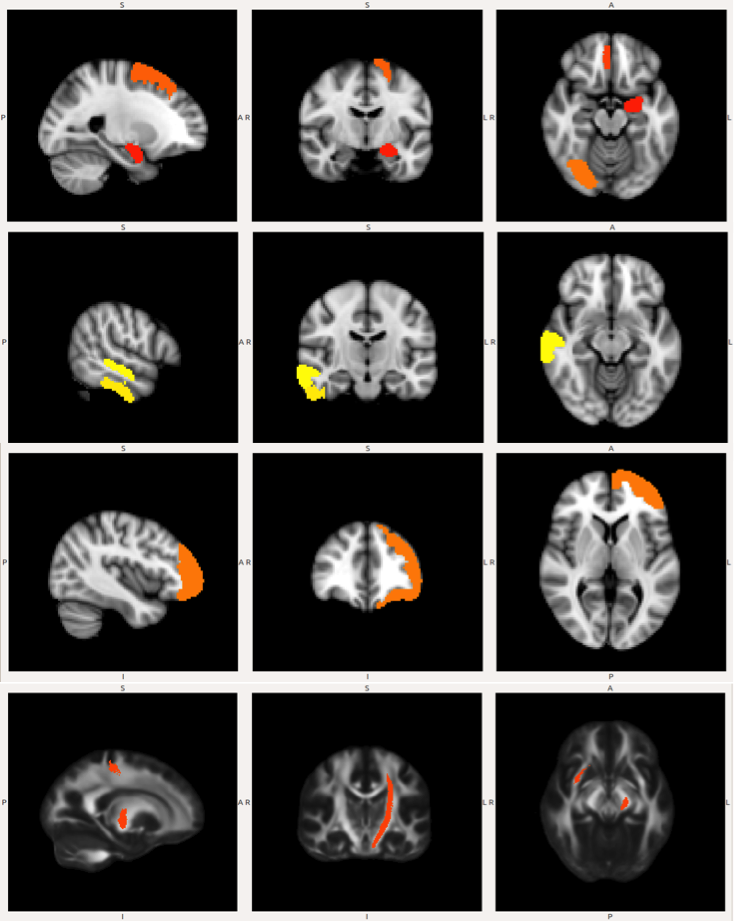
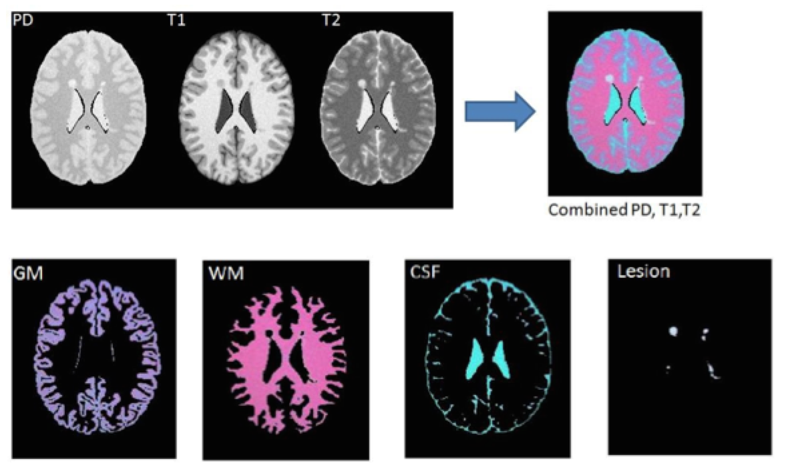
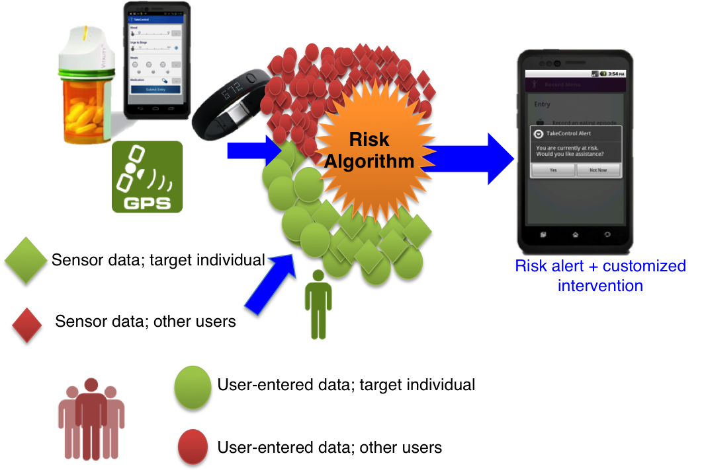
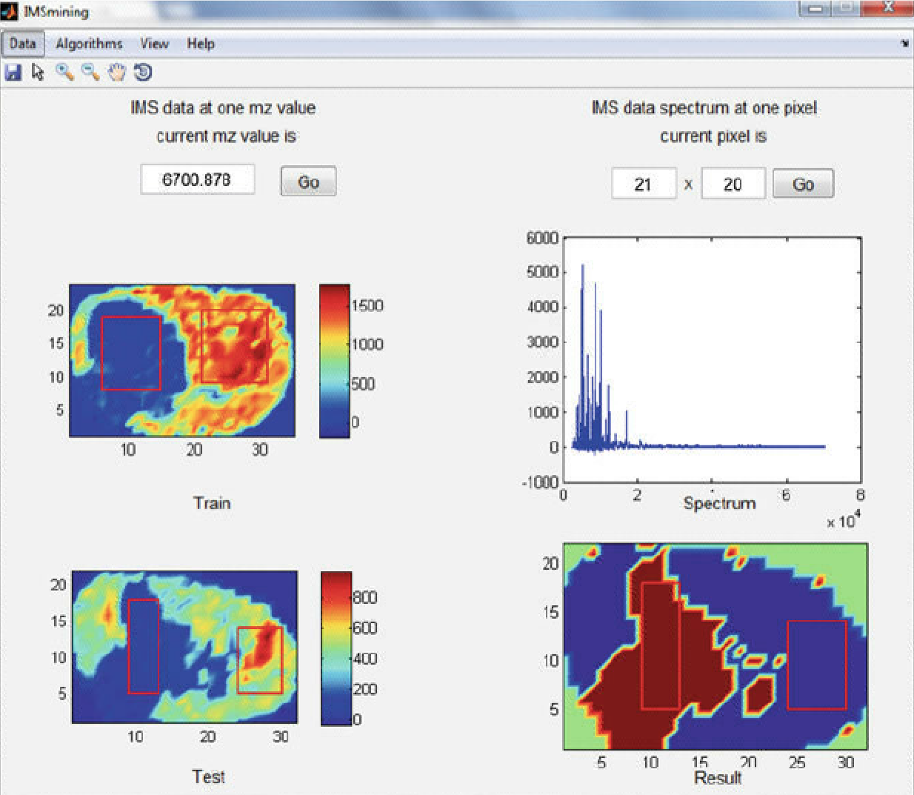
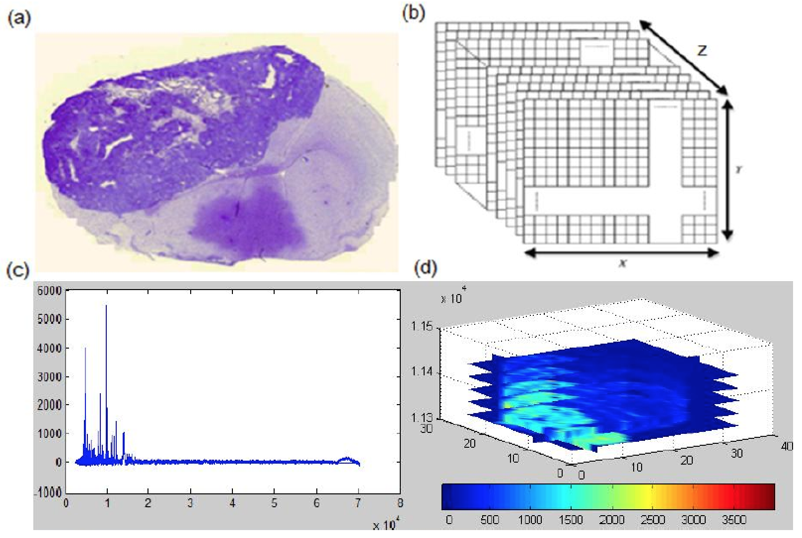
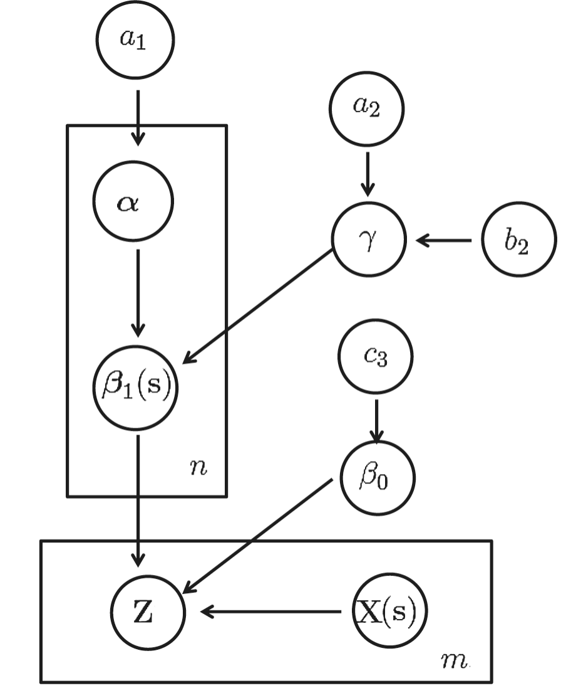

Quantitative Psychology and Statistics Lab
Home People News Research Publications Grant Support
Multimodal Neuroimaging
Multimodality brain imaging is a promising and recent approach to study the function and structure of the brain by collecting multiple types of data from the same individual using various imaging techniques (fMRI, fNIRS, MRI, DTI, EEG, etc.). This allows the examination of complex brain functions and diseases from different imaging techniques, which can yield important insights that are only partially detected by each modality. At the same time, however, the advent of multimodal neuroimaging has brought the urgent need to develop new data integration methods that can capitalize on the strength of each modality and make full usage of the data dimensionality and informational complexity
Using data from the Philadelphia Neurodevelopmental Cohort (PNC) study, we identify three distinct groups, people with trauma exposure and no post-traumatic stress disorder (PTSD) symptoms, people with trauma exposure and long-lasting PTSD symptoms as well as healthy controls. A large number of imaging features from different modalities including MRI, DTI, and resting-state fMRI are derived. We then develop an integrative probabilistic model to combine heterogeneous data from multiple modalities and select predictive multimodal imaging signatures of PTSD.

Neuroimaging Statistics
Recent advances in human neuroimaging have shown that it is possible to accurately decode how the brain perceives information based only on non-invasive function magnetic resonance imaging (fMRI) measurements of brain activity. Two common statistical approaches include univariate analysis and multivariate pattern analysis (MVPA).
In one of our projects, we investigated the representation and processing of auditory categories within the human temporal cortex using high resolution fMRI and MVPA methods. More importantly, we considered decoding multiple sound categories simultaneously through multi-class support vector machine-recursive feature elimination (MSVM-RFE) as our MVPA tool. Results show that the model MSVM-RFE was able to learn the functional relation between the multiple sound categories and the corresponding evoked spatial patterns for both within-subject and across-subject classifications.
Another project involves the segmentation of multimodal magnetic resonance imaging (MRI) images with multiple sclerosis (MS) lesions. Accurate identification of MS lesions is essential for MS diagnosis, assessment of disease progression, and evaluation of treatment efficacy. However, it is a challenging task due to the variability in lesion location, size and shape in addition to anatomical variability between subjects. In this work, we developed an integrative classification model that incorporates information from different resources to achieve robust and reliable segmentation results.

Wearable Computing
The integrated measurement of diet, physical activity, and the built environment is another important application of big data integration. Recent advances in wearable computing through the use of accelerometers, smartphones, and other devices for tracking individuals and individual behavior, have created a rich opportunity for the integrated measurement of environmental context and behavior. For example, combined GPS and accelerometer units can be used to measure both intensity of physical activity and the setting in which this activity occurred.
Through collaboration with other research groups at the WELL center, we developed statistical machine learning strategies for informing real time individualized sequences of treatments (Just-in-Time Adaptive Interventions) and integrating multimodal data generated from wearable devices (e.g., fitness trackers, heart rate monitors). These modeling strategies have been applied to predict dietary lapses and affect liability for patients with eating disorders.

Data Mining
As the amount of data being generated is exploding, we have entered the era of Big Data. To the extent that data can be analyzed, we may be able to gain a completely new perspective on our world, on how people interact, spend their resources, and organize their time. Data mining involves using algorithms and experience to extract patterns that are either very complex, difficult or time consuming to identify. In contrast to traditional hypothesis-driven approaches to analysis, data mining techniques enables researchers to assess the predictive value of all possible combinations of variables in a data set. Data mining has emerged in recent years as a major area of statistical research and practice and is increasingly employed by psychologists and other behavioral scientists.
In one of our projects, we developed IMSmining, a free software tool for automatic selection of potential biomarkers and discrimination of disease and healthy groups. This software tool combines functions of intuitive visualization of imaging mass spectrometry (IMS) data with advanced data mining algorithms such as elastic net, sparse PAC as well as our proposed models (EN4IMS and WEN).
Through collaborations with the lab for innovations in health-related behavior change, we developed data mining models for DietAlert, a therapeutic smartphone app. Data mining models are built to learn relationships between triggers and dietary lapses, and provide real-time prediction when an individual might be at risk for going off their diet.

High Dimensional Data Analysis
In traditional statistical analysis, we assume many observations and a few, well-chosen variables. The trend today is towards more observations but even more so, to much larger number of variables. If the number of variables can greatly exceed the number of observations, we call this type of data high-dimensional data. High dimensionality brings noise accumulation, spurious correlations and incidental homogeneity. The complexity and high dimensionality of data pose great challenges and difficulties for information extraction and data analysis.
Over the past few years, significant developments have been made in high-dimensional data analysis, driven primarily by a broad range of applications in many fields such as neuroimaging, genomics, and social network data. In our lab, we have been focused on areas of feature selection, classification, regression and dimension reduction. For example, we developed feature selection and classification strategies for brain decoding using fMRI data as well as imaging mass spectrometry data.

Bayesian Inference
Bayesian inference is a type of statistical inference in which the probability for a hypothesis is updated based on Bayes’ theorem as more information becomes available. A key element of the Bayesian inference is to treat parameters as random variables instead of fixed constants. This approach requires a prior distribution for each unknown parameters whose distribution is updated as a posterior distribution. Bayesian analysis provides a natural and principal way of combining prior information with data. In addition, it provides a flexible setting for a wide range of models such as hierarchical models.
In one of our projects, we developed a Bayesian spatially varying coefficient model to incorporate spatial information among brain voxels for fMRI data. By incoroporating the spatial prior information, our approach is shown to be effective in identifying the truly localized patterns of the voxels while maintaining robustness to discover truly distributed pattern.

Weight Loss Maintenance
Since I joined the Psychology department at Drexel, I have been actively involved in several NIH funded projects on assessment of novel interventions for weight loss and maintenance. I collaborate with the lab for innovations in health-related behavior change and the lab for eating disorders and obesity research. Some of my working topics include a test of nutritional interventions to enhance weight loss maintenance using multilevel modeling, examination of environmental and acceptance-based factors for weight loss maintenance, and a mobile intervention for dietary lapses using data mining.